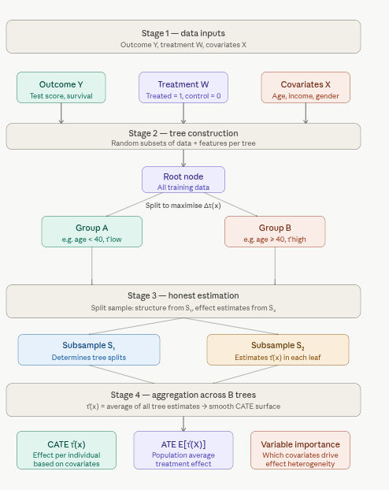
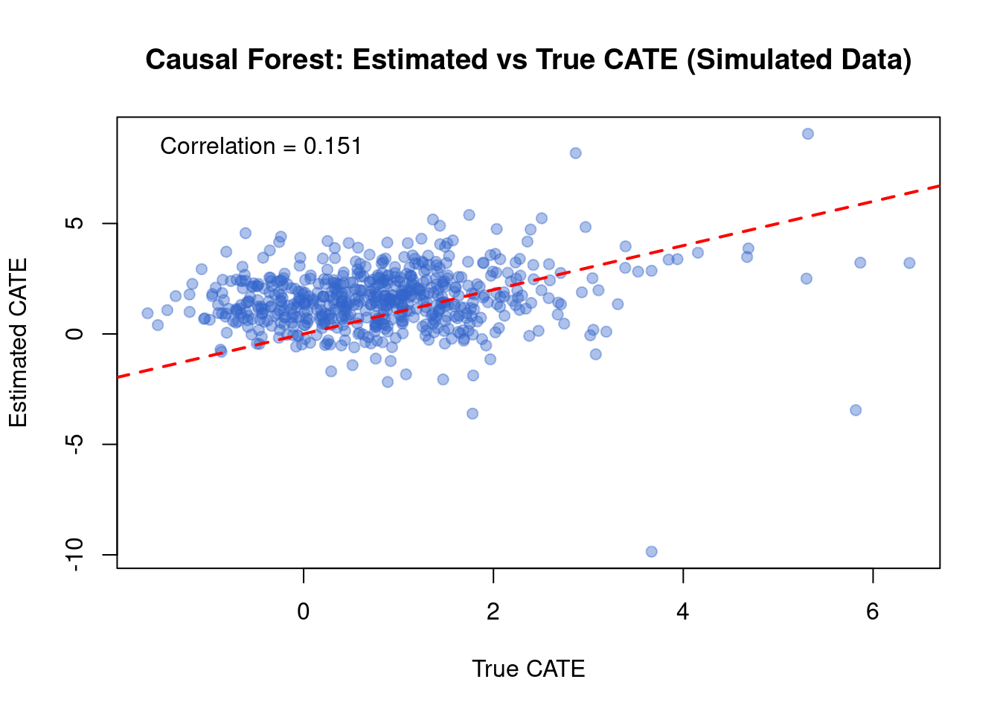
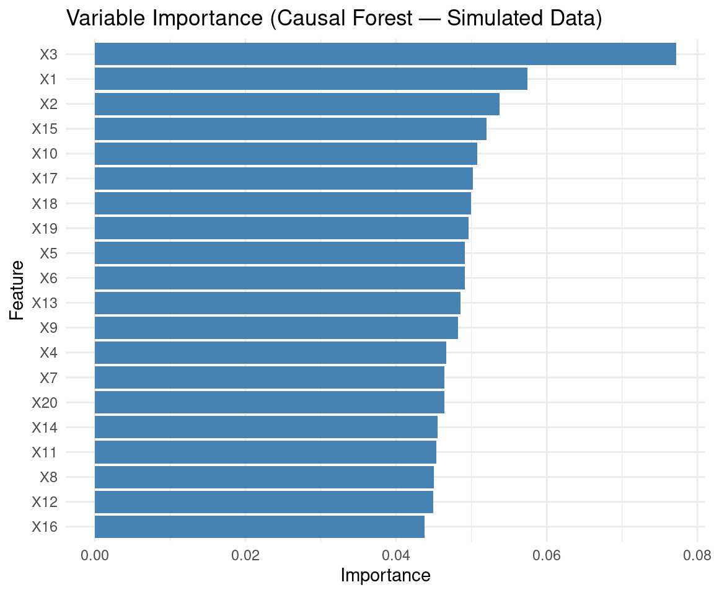
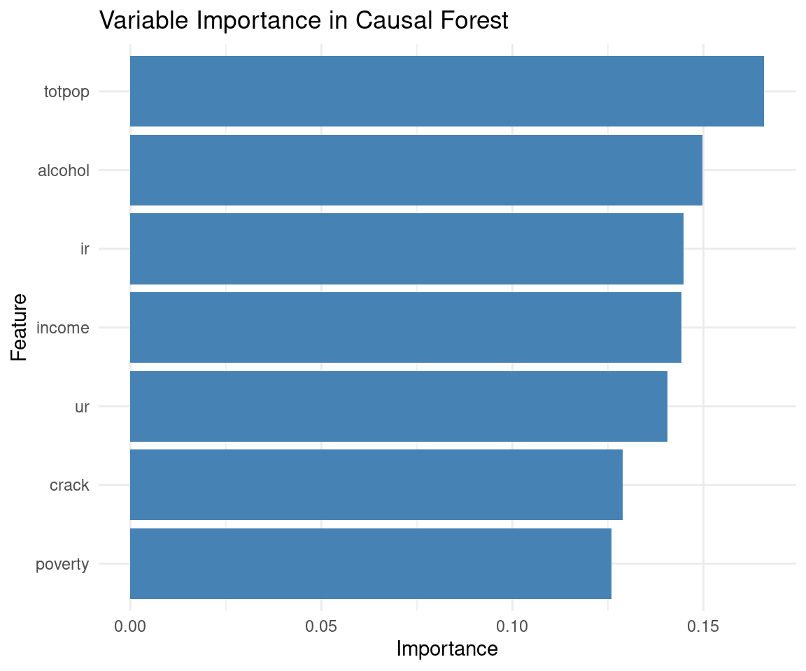
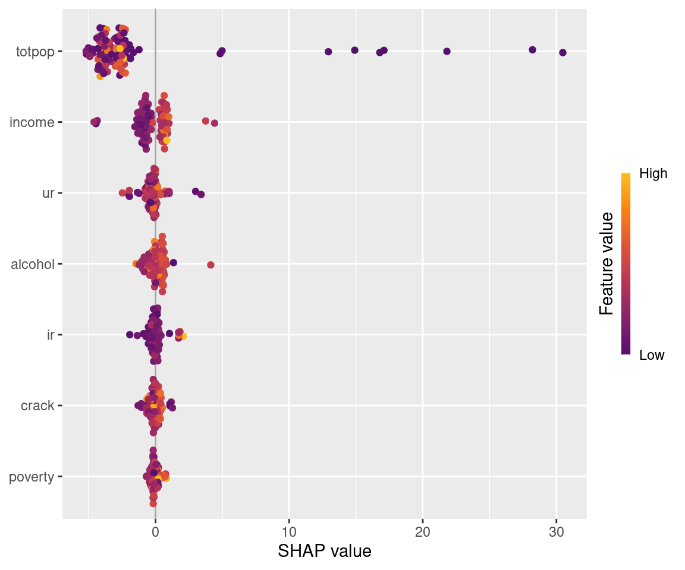
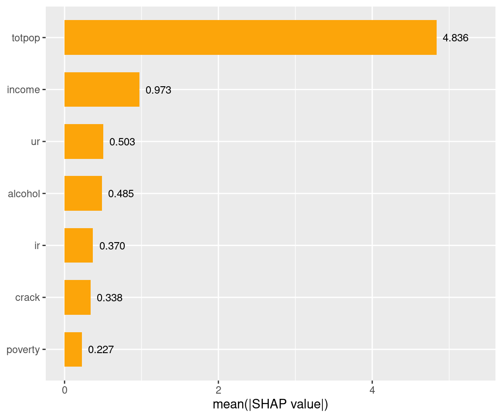
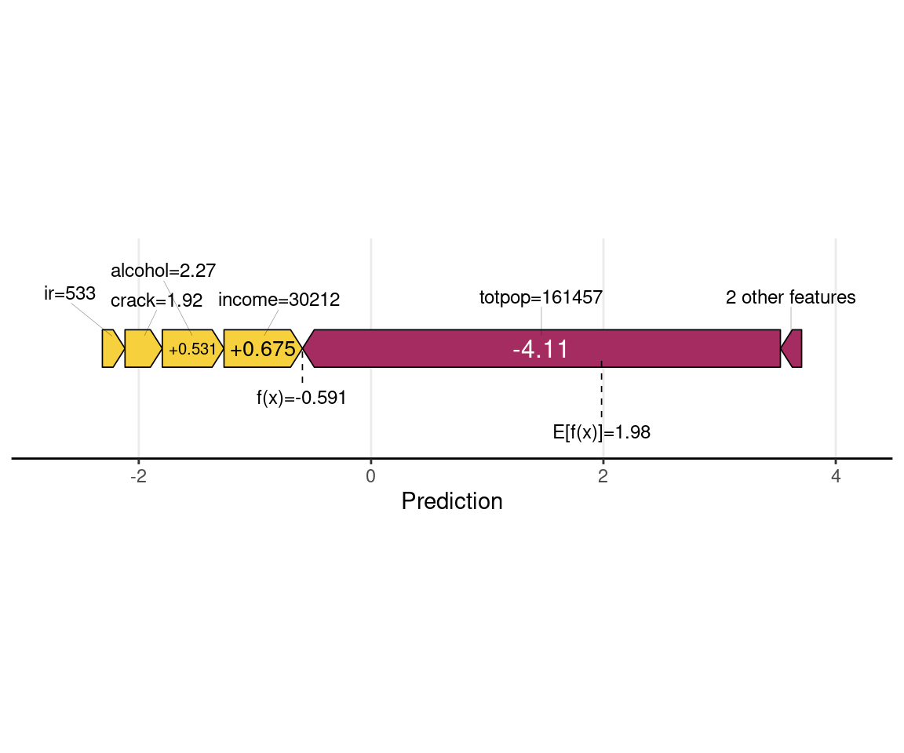
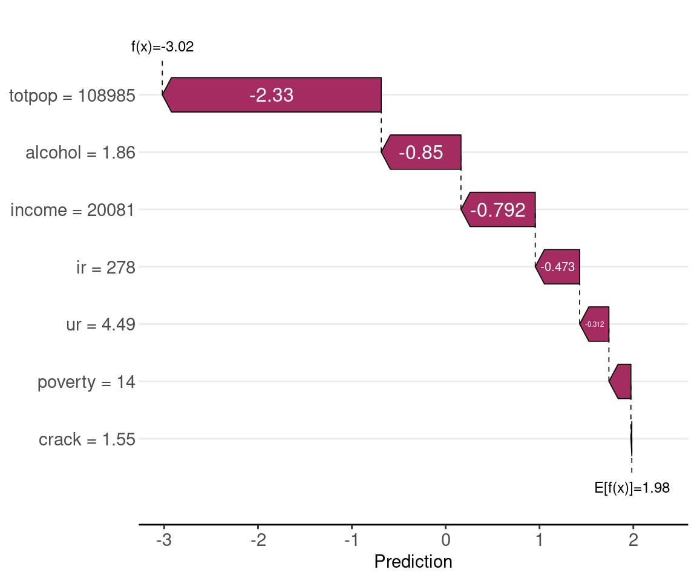

Code
packages <- c(
"tidyverse",
"plyr",
"RCausalML",
"causaldata",
"mlbench",
"gridExtra",
"kernelshap",
"shapviz"
)
This tutorial provides an overview of Causal Forests (CF) within the Generalized Random Forests (GRF) framework, focusing on estimating heterogeneous treatment effects in observational or experimental data. It includes a step-by-step guide to implementing Causal Forests using the grf package in R, with practical examples and explanations tailored to the abortion dataset from the causaldata package.
A Causal Forest is a machine learning method within the Generalized Random Forests (GRF) framework, designed to estimate Heterogeneous Treatment Effects (HTE) — specifically the Conditional Average Treatment Effect (CATE) — across individuals in observational or experimental studies.
It adapts the classic random forest algorithm for causal inference, asking not “what will happen?” but “what is the effect of treatment for this type of person?”
Treatment Effect measures the difference in outcomes between a treated and untreated individual:
\[\tau(x) = E[Y(1) - Y(0) \mid X = x]\]
where \(Y(1)\) is the outcome if treated, \(Y(0)\) if untreated, \(X\) represents covariates (age, sex, income, etc.), and \(\tau(x)\) is the CATE — the expected treatment effect for an individual with covariates \(X = x\).
Heterogeneity is the core motivation: treatment effects aren’t uniform. A drug may work better for older patients; an intervention may help high-income households more than low-income ones. Causal forests find where and how much these effects vary.
Random Forest Foundation: Like standard random forests, causal forests use an ensemble of decision trees — but trees are grown to maximize heterogeneity in treatment effects, not prediction accuracy.
1. Data Requirements — You need three things: an outcome \(Y\) (e.g. survival time, test score), a treatment indicator \(W\) (binary or continuous: treated vs. control), and covariates \(X\) (features like age, income).
2. Tree Construction — Each tree is grown on a random data/feature subset. Splits are chosen to maximally separate groups with different treatment effects — not to minimize prediction error. The criterion targets variance in \(\tau(x)\) across branches.
3. Honest Estimation — To avoid overfitting, one subsample determines the tree structure (splits), and a held-out subsample estimates treatment effects within each leaf. This ensures unbiased \(\tau(x)\) estimates.
4. Aggregation — All trees are averaged into a smooth, non-parametric estimate of \(\tau(x)\) across the covariate space.
5. Outputs — The forest produces: CATE estimates \(\tau(x)\) per individual, an Average Treatment Effect (ATE) \(= E[\tau(X)]\), and variable importance scores showing which covariates drive treatment effect heterogeneity.

The diagram walks through all five stages end-to-end:
This tutorial uses the RCausalML integrated with grf package for robust implementation of Causal Forests. The grf package allows users to estimate Conditional Average Treatment Effects (CATE) and visualize treatment effect heterogeneity effectively.
We’ll cover:
abortion dataset from causaldata
Following R packages are required to run this notebook. If any of these packages are not installed, you can install them using the code below:
tidyverse, plyr, RCausalML, causaldata, mlbench, gridExtra, kernelshap, shapviz
packages <- c(
"tidyverse",
"plyr",
"RCausalML",
"causaldata",
"mlbench",
"gridExtra",
"kernelshap",
"shapviz"
)# Install missing packages
# new_packages <- packages[!(packages %in% installed.packages()[, "Package"])]
# if (length(new_packages)) install.packages(new_packages)# Load packages with suppressed messages
invisible(lapply(packages, function(pkg) {
suppressPackageStartupMessages(library(pkg, character.only = TRUE))
}))# Check loaded packages
cat("Successfully loaded packages:\n")Successfully loaded packages: [1] "package:shapviz" "package:kernelshap" "package:gridExtra"
[4] "package:mlbench" "package:causaldata" "package:RCausalML"
[7] "package:plyr" "package:lubridate" "package:forcats"
[10] "package:stringr" "package:dplyr" "package:purrr"
[13] "package:readr" "package:tidyr" "package:tibble"
[16] "package:ggplot2" "package:tidyverse" "package:stats"
[19] "package:graphics" "package:grDevices" "package:utils"
[22] "package:datasets" "package:methods" "package:base" Before applying Causal Forests to real data, it’s often helpful to understand the method using simulated data where the true treatment effects are known. This allows us to verify that the causal forest can recover the underlying heterogeneity in treatment effects.
We use simulated data from synthetic_data() (see R/synthetic_data.R) to illustrate fitting a causal forest. The data has a known heterogeneous treatment effect structure, so we can compare estimated CATEs to the true effects.
set.seed(42)
dat_sim <- synthetic_data(mode = 2, n = 3000, p = 20, sigma = 5.5)
# Extract components
y_sim <- dat_sim$y
X_sim <- dat_sim$X
w_sim <- dat_sim$w
tau_sim <- dat_sim$tau # true CATE (for evaluation)
# Train/test split (80% / 20%)
n_sim <- nrow(X_sim)
idx_tr <- sample(n_sim, size = round(0.8 * n_sim))
X_tr <- X_sim[idx_tr, , drop = FALSE]
Y_tr <- y_sim[idx_tr]
W_tr <- w_sim[idx_tr]
X_te <- X_sim[-idx_tr, , drop = FALSE]
tau_te <- tau_sim[-idx_tr] # hold-out true CATE for evaluation
cat("Training: n =", length(Y_tr), "| Test: n =", length(tau_te), "\n")Training: n = 2400 | Test: n = 600 True CATE (test) — mean: 0.813 , sd: 1.105 Fit a causal forest on the simulated training data. We use honest splitting and a moderate number of trees for speed; you can increase num.trees for production use.
library(future)
# Detect cores and set parallel threads
n_cores <- max(1L, parallel::detectCores() - 1L)
# Fit causal forest with tuning
if (nrow(X_tr) > 5000L) {
# Large data — reduce trees slightly, rely on parallelism
n_trees <- 500L
samp_fraction <- 0.4
min_node <- 10L
} else {
# Small/medium data — more trees for stability, finer nodes
n_trees <- 200L
samp_fraction <- 0.5
min_node <- 5L
}
cf_sim <- causal_forest(
X = X_tr,
Y = Y_tr,
W = W_tr,
num.trees = n_trees,
sample.fraction = samp_fraction,
min.node.size = min_node,
honesty = TRUE,
honesty.fraction = 0.5,
tune.parameters = "all", # auto-tunes key hyperparameters
num.threads = n_cores, # built-in OpenMP parallelism
seed = 123
)
# Summarize
summary(cf_sim)=== Causal Forest Summary ===
Causal Forest
-------------
Trees : 200
Observations : 2400
Covariates : 20
Honesty : TRUE (fraction = 0.50)
min.node.size : 5
mtry : 20
alpha : 0.050
OOB preds : 2400 / 2400 obs covered
ATE (OOB est) : 1.5118
OOB Prediction Distribution:
Min. 1st Qu. Median Mean 3rd Qu. Max.
-8.2756 0.6461 1.5605 1.5118 2.4242 10.9066 . The ATE is the average treatment effect across the training population, with a 95% confidence interval.
Because we know the true CATE on the test set, we can evaluate how well the forest recovers heterogeneity (e.g., correlation between predicted and true CATE).
Correlation(estimated CATE, true CATE) on test set: 0.111 # Visualize: predicted vs true CATE
plot(tau_te, cate_sim_pred, pch = 19, col = rgb(0.2, 0.4, 0.8, 0.4),
xlab = "True CATE", ylab = "Estimated CATE",
main = "Causal Forest: Estimated vs True CATE (Simulated Data)")
abline(0, 1, lty = 2, col = "red", lwd = 2)
legend("topleft", legend = paste0("Correlation = ", round(cor_te, 3)), bty = "n")
Variable importance shows which covariates the forest used most when splitting to capture heterogeneity in treatment effects.
# Extract importance and feature names from the model itself
var_imp_sim <- as.numeric(variable_importance(cf_sim))
features_sim <- colnames(cf_sim$X.orig) # source of truth — not X_tr
# Fallback if column names are still missing
if (is.null(features_sim)) {
features_sim <- paste0("X", seq_along(var_imp_sim))
}
# Plot or warn
if (length(var_imp_sim) == length(features_sim) && length(var_imp_sim) > 0) {
importance_df_sim <- data.frame(
Feature = features_sim,
Importance = var_imp_sim
) |>
dplyr::arrange(Importance) # stable order for coord_flip
ggplot(importance_df_sim, aes(x = reorder(Feature, Importance), y = Importance)) +
geom_bar(stat = "identity", fill = "steelblue") +
coord_flip() +
labs(
title = "Variable Importance (Causal Forest — Simulated Data)",
x = "Feature",
y = "Importance"
) +
theme_minimal()
} else {
message(
"Length mismatch — var_imp: ", length(var_imp_sim),
" | features: ", length(features_sim),
"\nRun the diagnostic block above to inspect."
)
}
This section of tutorial demonstrates how to fit a Causal Forest using the abortion dataset: state-year observations on gonorrhea rates among 15–19 year olds, with treatment defined by early repeal of abortion prohibition.
R package causaldata provides a collection of datasets for causal inference. We integrate {causaldata} with {RCausalML} to easily load datasets. In this tutorial, we use the abortion dataset, which contains state-year observations on gonorrhea rates among 15–19 year olds, with a binary indicator for early repeal of abortion prohibition. This dataset is commonly used to study the effects of abortion legalization on risky sexual behavior among teenagers, proxied by gonorrhea rates.
This dataset is commonly used to study the causal effects of abortion legalization policies (specifically, early repeal of abortion prohibitions in certain U.S. states) on risky sexual behavior among teenagers. Risky behavior is proxied by the incidence of gonorrhea (a sexually transmitted infection) among 15–19 year olds. The idea is that access to abortion might influence sexual decision-making or risk-taking behavior in this age group.
Here are the most important columns (based on the package documentation):
# causaldata integration
list_causaldata_datasets() name description
1 nsw_mixtape NSW job training experiment (Lalonde); experimental
2 cps_mixtape CPS comparison to NSW; observational
3 abortion Abortion repeal and gonorrhea (state-year); DiD
4 close_college College proximity and wages (Card); IV
5 social_insure Social networks and insurance take-up; experiment
6 black_politicians Black politicians and turnout; RDD
7 thornton_hiv HIV testing incentive experiment
8 nhefs_complete NHEFS smoking and weight; observational
type treatment outcome
1 binary_treatment treat re78
2 binary_treatment treat re78
3 binary_treatment repeal lnr
4 iv educ lwage
5 binary_treatment default takeup_survey
6 binary_treatment treat_out responded
7 binary_treatment any got
8 binary_treatment qsmk wt82_71
covariates textbook
1 age, educ, black, hisp, marr, nodegree, re74, re75 Mixtape
2 age, educ, black, hisp, marr, nodegree, re74, re75 Mixtape
3 age, race, year, income, ur, poverty, crack, alcohol, ... Mixtape
4 exper, black, south, married, smsa Mixtape
5 age, agpop, ricearea_2010, disaster_prob, male, intensive, ... The Effect
6 totalpop, medianhhincom, blackpercent, leg_black, ... Mixtape
7 age, distvct, villnum, tinc The Effect
8 sex, age, race, school, smokeintensity, smokeyrs, ... What IfThe outcome variable is typically lnr (logged gonorrhea rate per 100,000 population among 15–19 year olds), which measures the logged incidence of gonorrhea as a proxy for risky sexual behavior.
# Load abortion dataset (use $data for the raw dataframe; load_causaldata returns list with X, w, y, data, citation)
abortion <- load_causaldata("abortion")$data
# Quick look
head(abortion)# A tibble: 6 × 22
fip age race year sex totpop ir crack alcohol income ur poverty
<dbl> <dbl> <dbl> <dbl> <dbl> <dbl> <dbl> <dbl> <dbl> <dbl> <dbl> <dbl>
1 1 15 2 1985 2 106187 101. 0.217 1.90 11566 8.62 20.6
2 1 15 2 1986 2 106831 112. 0.277 1.90 12164 9.08 23.8
3 1 15 2 1987 2 106496 123. 0.211 1.89 12826 7.65 21.3
4 1 15 2 1988 2 105238 134. 0.560 1.89 13698 6.92 19.3
5 1 15 2 1989 2 102956 146. 0.722 1.87 14865 6.62 18.9
6 1 15 2 1990 2 100568 157. 0.509 1.92 15723 6.33 19.2
# ℹ 10 more variables: repeal <dbl>, acc <dbl>, wht <dbl>, male <dbl>,
# lnr <dbl>, t <dbl>, younger <dbl>, fa <dbl>, pi <dbl>, bf15 <dbl>str(abortion)tibble [737 × 22] (S3: tbl_df/tbl/data.frame)
$ fip : num [1:737] 1 1 1 1 1 1 1 1 1 1 ...
..- attr(*, "label")= chr "FIPSCODE"
..- attr(*, "format.stata")= chr "%8.0g"
$ age : num [1:737] 15 15 15 15 15 15 15 15 15 15 ...
..- attr(*, "label")= chr "AGE"
..- attr(*, "format.stata")= chr "%9.0g"
$ race : num [1:737] 2 2 2 2 2 2 2 2 2 2 ...
..- attr(*, "label")= chr "w-1, b-2"
..- attr(*, "format.stata")= chr "%9.0g"
$ year : num [1:737] 1985 1986 1987 1988 1989 ...
..- attr(*, "label")= chr "YEAR"
..- attr(*, "format.stata")= chr "%8.0g"
$ sex : num [1:737] 2 2 2 2 2 2 2 2 2 2 ...
..- attr(*, "label")= chr "m-1, f-2"
..- attr(*, "format.stata")= chr "%9.0g"
$ totpop : num [1:737] 106187 106831 106496 105238 102956 ...
..- attr(*, "label")= chr "TOTPOP"
..- attr(*, "format.stata")= chr "%12.0g"
$ ir : num [1:737] 101 112 123 134 146 ...
..- attr(*, "label")= chr "Incarcerated Males per 100,000"
..- attr(*, "format.stata")= chr "%9.0g"
$ crack : num [1:737] 0.217 0.277 0.211 0.56 0.722 ...
..- attr(*, "label")= chr "Crack index"
..- attr(*, "format.stata")= chr "%9.0g"
$ alcohol: num [1:737] 1.9 1.9 1.89 1.89 1.87 ...
..- attr(*, "label")= chr "Alcohol consumption per capita"
..- attr(*, "format.stata")= chr "%9.0g"
$ income : num [1:737] 11566 12164 12826 13698 14865 ...
..- attr(*, "label")= chr "Real income per capita"
..- attr(*, "format.stata")= chr "%9.0g"
$ ur : num [1:737] 8.62 9.08 7.65 6.92 6.62 ...
..- attr(*, "label")= chr "State unemployment rate"
..- attr(*, "format.stata")= chr "%9.0g"
$ poverty: num [1:737] 20.6 23.8 21.3 19.3 18.9 ...
..- attr(*, "label")= chr "Poverty rate"
..- attr(*, "format.stata")= chr "%9.0g"
$ repeal : num [1:737] 0 0 0 0 0 0 0 0 0 0 ...
..- attr(*, "format.stata")= chr "%9.0g"
$ acc : num [1:737] 0.68 1.53 3.5 6.26 9.42 ...
..- attr(*, "label")= chr "AIDS mortality per 100,000 cumulative in t, t-1, t-2, t-3"
..- attr(*, "format.stata")= chr "%9.0g"
$ wht : num [1:737] 0 0 0 0 0 0 0 0 0 0 ...
..- attr(*, "label")= chr "White Indicator"
..- attr(*, "format.stata")= chr "%9.0g"
$ male : num [1:737] 0 0 0 0 0 0 0 0 0 0 ...
..- attr(*, "label")= chr "Male Indicator"
..- attr(*, "format.stata")= chr "%9.0g"
$ lnr : num [1:737] 8.78 8.76 8.66 8.72 8.69 ...
..- attr(*, "format.stata")= chr "%9.0g"
$ t : num [1:737] 1 2 3 4 5 6 7 8 9 10 ...
..- attr(*, "format.stata")= chr "%9.0g"
$ younger: num [1:737] 1 1 1 1 1 1 1 1 1 1 ...
..- attr(*, "format.stata")= chr "%9.0g"
$ fa : num [1:737] 1 1 1 1 1 1 1 1 1 1 ...
..- attr(*, "format.stata")= chr "%9.0g"
$ pi : num [1:737] 0 0 1 1 1 1 1 1 1 1 ...
..- attr(*, "format.stata")= chr "%9.0g"
$ bf15 : num [1:737] 1 1 1 1 1 1 1 1 1 1 ...
..- attr(*, "format.stata")= chr "%9.0g"summary(abortion$repeal) # Treatment balance Min. 1st Qu. Median Mean 3rd Qu. Max.
0.0000 0.0000 0.0000 0.1085 0.0000 1.0000 table(abortion$repeal, abortion$race) # Example crosstab
2
0 657
1 80# Visualize treatment assignment, outcome, and covariate distributions in a panel layout
library(gridExtra)
library(ggplot2)
# Treatment assignment barplot (as ggplot)
df_tab <- data.frame(group = factor(c("Control", "Treated"), levels = c("Control", "Treated")),
n = as.numeric(table(abortion$repeal)))
plt_treat <- ggplot(df_tab, aes(x = group, y = n, fill = group)) +
geom_bar(stat = "identity", width = 0.7) +
scale_fill_manual(values = c("skyblue", "tomato")) +
labs(title = "Treatment Group Sizes", x = "", y = "Number of Observations") +
theme_minimal() +
theme(legend.position = "none")
# Outcome by treatment boxplot (as ggplot)
plt_outcome <- ggplot(abortion, aes(x = factor(repeal, labels = c("Control", "Treated")), y = lnr, fill = factor(repeal))) +
geom_boxplot(alpha = 0.8) +
scale_fill_manual(values = c("skyblue", "tomato")) +
labs(title = "Logged Gonorrhea Rate by Treatment Group", x = "", y = "lnr (log gonorrhea rate)") +
theme_minimal() +
theme(legend.position = "none")
# Covariate boxplots
abortion$group <- factor(abortion$repeal, levels = c(0, 1), labels = c("Control", "Treated"))
feature_vars <- c("totpop", "income", "alcohol", "ir", "crack", "poverty")
covar_plots <- lapply(feature_vars, function(var) {
ggplot(abortion, aes_string(x = "group", y = var, fill = "group")) +
geom_boxplot(alpha = 0.8) +
theme_minimal() +
xlab("") +
ggtitle(paste("Distribution of", var, "by Treatment Group")) +
scale_fill_manual(values = c("skyblue", "tomato")) +
theme(legend.position = "none")
})
# Arrange plots in panels. We'll create a two-row panel: first row = assignment + outcome, next rows = covariates.
grid.arrange(
plt_treat, plt_outcome,
covar_plots[[1]], covar_plots[[2]], covar_plots[[3]],
covar_plots[[4]], covar_plots[[5]], covar_plots[[6]],
ncol = 2,
top = "Treatment, Outcome and Covariate Distributions by Group"
)
# Select relevant subset (focus on 15-19 year olds, complete cases)
abortion_clean <- abortion %>%
dplyr::filter(age >= 15 & age <= 19) %>%
na.omit()
# Define covariates (X), outcome (Y), treatment (W)
X <- abortion_clean[, c("age", "race", "sex", "totpop", "ir", "crack",
"alcohol", "income", "ur", "poverty")]
Y <- abortion_clean$lnr # Logged gonorrhea rate per 100,000 (continuous)
W <- abortion_clean$repeal # 1 = early repeal (treatment), 0 = otherwise
# Convert X to numeric matrix
X <- as.matrix(X)
colnames(X) <- c("age", "race", "sex", "totpop", "ir", "crack",
"alcohol", "income", "ur", "poverty")
# Remove near-zero variance columns (if any)
X <- X[, apply(X, 2, stats::var) > 1e-10, drop = FALSE]
cat("Covariates used:", colnames(X), "\n")Covariates used: totpop ir crack alcohol income ur poverty We’ll split the data into 80% training and 20% test sets using random sampling.
# Split data into training (80%) and test (20%) sets
train_prop <- 0.8
n <- nrow(abortion_clean)
train_idx <- sample(1:n, size = round(train_prop * n))
X_train <- X[train_idx, , drop = FALSE]
Y_train <- Y[train_idx]
W_train <- W[train_idx]
X_test <- X[-train_idx, , drop = FALSE]
Y_test <- Y[-train_idx]
W_test <- W[-train_idx]
cat("Training set size:", nrow(X_train), "\n")Training set size: 590 Test set size: 147 Column names of X_train: totpop ir crack alcohol income ur poverty The causal_forest() function in the grf package in R is used to estimate heterogeneous treatment effects (Conditional Average Treatment Effects, CATE) using a causal forest, a specialized random forest for causal inference. Below is a concise overview of the most important arguments for the causal_forest() function, based on the grf package documentation (version 2.3.2, available at https://grf-labs.github.io/grf/). These arguments control the model’s behavior, estimation process, and performance tuning.
Below are the important arguments of causal_forest() function:
X (Required): Matrix of covariates (features) used to estimate heterogeneity in treatment effects. Each row is an observation, and each column is a covariate (e.g., age, sex).
Y (Required): Vector of observed outcomes (e.g., survival time, test score).
W (Required): Vector of treatment assignments (e.g., 1 = treated, 0 = control for binary treatment).
num.trees (Default: 2000): Number of trees in the forest.
sample.fraction (Default: 0.5): Fraction of data used to build each tree (subsampling rate).
mtry : Number of covariates considered for splitting at each node. If NULL, defaults to \(\min(\lceil \sqrt{p} \rceil, \lceil p/3 \rceil)\), where \(p\) is the number of covariates.
min.node.size (Default: 5): Minimum number of observations in each leaf node.
honesty (Default: TRUE): Whether to use honest splitting (separate data for tree structure and effect estimation).
honesty.fraction (Default: 0.5): Fraction of data used for honest estimation (when honesty = TRUE). The remaining fraction is used for tree structure.
ci.group.size (Default: 2): Number of trees grouped to compute variance estimates for confidence intervals.
alpha (Default: 0.05): Maximum imbalance allowed in treatment/control splits, controlling propensity score overlap.
imbalance.penalty (Default: 0): Penalty for imbalanced splits in treatment/control groups.
stabilize.splits (Default: TRUE): Whether to stabilize splits by enforcing balance in treatment/control groups.
tune.parameters (Default: “none”): Specifies whether to tune hyperparameters (e.g., mtry,min.node.size) via cross-validation. For more details, refer to thegrf documentation (https://grf-labs.github.io/grf/) or ask for specific clarifications!
# Detect available cores
n_cores <- max(1L, parallel::detectCores() - 1L)
# Adapt hyperparameters to data size
n_obs <- nrow(X_train)
n_feat <- ncol(X_train)
if (n_obs > 10000L) {
# Large data — fewer trees, coarser nodes, smaller fraction
n_trees <- 500L
samp_frac <- 0.35
min_node <- 20L
ci_group <- 4L
} else if (n_obs > 2000L) {
# Medium data
n_trees <- 300L
samp_frac <- 0.45
min_node <- 10L
ci_group <- 2L
} else {
# Small data — more trees for stability, fine nodes
n_trees <- 200L
samp_frac <- 0.5
min_node <- 5L
ci_group <- 2L
}
# Safe mtry calculation
mtry_val <- if (n_feat >= 3L) {
min(ceiling(sqrt(n_feat)), floor(n_feat / 3))
} else {
# Too few features for /3 rule — use all
n_feat
}
# causal forest
cf_model <- causal_forest(
X = X_train,
Y = Y_train,
W = W_train,
num.trees = n_trees,
sample.fraction = samp_frac,
mtry = mtry_val,
min.node.size = min_node,
honesty = TRUE,
honesty.fraction = 0.5,
ci.group.size = ci_group,
alpha = 0.05,
imbalance.penalty = 0,
stabilize.splits = TRUE,
tune.parameters = "all", # auto-tunes on top of your starting values
num.threads = n_cores, # OpenMP parallelism — biggest single speedup
seed = 123
)
# Summarize
summary(cf_model)=== Causal Forest Summary ===
Causal Forest
-------------
Trees : 200
Observations : 590
Covariates : 7
Honesty : TRUE (fraction = 0.50)
min.node.size : 5
mtry : 2
alpha : 0.050
OOB preds : 590 / 590 obs covered
ATE (OOB est) : 0.8871
OOB Prediction Distribution:
Min. 1st Qu. Median Mean 3rd Qu. Max.
-6.3483 -2.2907 -1.2656 0.8871 -0.5635 68.7442 # Estimate ATE on training data
ate_train <- average_treatment_effect(cf_model)
cat("Training ATE:", ate_train$estimate, "±", 1.96 * ate_train$std.err, "(95% CI)\n")Training ATE: 0.7900597 ± 1.117801 (95% CI)The ATE is the average treatment effect on the logged gonorrhea rate (lnr) across the training population—i.e., how much early repeal of abortion prohibition is associated with a change in lnr—with a 95% confidence interval.
The Rank-Weighted Average Treatment Effect (RATE) and Area Under the Prioritization Curve (AUTOC) are metrics for treatment effect heterogeneity. The rank_average_treatment_effect() function in the {grf} package computes AUTOC and a 95% CI. RCausalML’s causal forest does not implement RATE; use the {grf} package if you need this. Below we show a simple summary of CATE heterogeneity on the test set.
CATE on test set: mean = -0.073 , sd = 6.397 Range: -5.385 to 39.519 # Variable importance
var_importance <- variable_importance(cf_model)
features <- colnames(X_train)
# Create a data frame for plotting
importance_df <- data.frame(
Feature = features,
Importance = var_importance
)
# Create bar plot with ggplot2
ggplot(importance_df, aes(x = reorder(Feature, Importance), y = Importance)) +
geom_bar(stat = "identity", fill = "steelblue") +
coord_flip() + # Flip coordinates for better readability
labs(title = "Variable Importance in Causal Forest",
x = "Feature",
y = "Importance") +
theme_minimal()
We use the {shapviz} package for SHAP analysis. This package is integrated with {RCausalML} via explain_cate(): you compute SHAP values with {kernelshap} (or {permshap}), then pass the result to shapviz() for importance, dependence, waterfall, and force plots.
SHAP values are computed for the causal forest’s CATE predictions using explain_cate(), then visualized with {shapviz}. A subsample of the training data is used for speed.
library(future)
# Parallel backend
plan(multisession, workers = max(1L, parallel::detectCores() - 1L))
# Separate explain vs background sets
# Using the same set for both leaks info — split them.
set.seed(42)
n_explain <- min(80L, nrow(X_train))
n_bg <- min(50L, nrow(X_train))
if (nrow(X_train) > n_explain + n_bg) {
# Enough rows — keep explain and background non-overlapping
idx_explain <- sample(nrow(X_train), n_explain)
idx_bg <- sample(setdiff(seq_len(nrow(X_train)), idx_explain), n_bg)
} else {
# Small dataset — allow overlap rather than crash
idx_explain <- sample(nrow(X_train), n_explain)
idx_bg <- sample(nrow(X_train), n_bg)
}
X_explain <- as.data.frame(X_train[idx_explain, , drop = FALSE])
bg_X <- as.data.frame(X_train[idx_bg, , drop = FALSE])# Compute SHAP
ks <- explain_cate(
cf_model,
X = X_explain,
bg_X = bg_X,
use_permshap = TRUE,
verbose = FALSE
)
# Reset workers
plan(sequential)shp <- shapviz::shapviz(ks)
shapviz::sv_importance(shp, kind = "beeswarm")
if (exists("shp")) {
shapviz::sv_importance(shp, show_numbers = TRUE)
}
Dependence of SHAP values on each covariate (patchwork object).
if (exists("shp") && exists("xvars")) {
shapviz::sv_dependence(shp, v = xvars, share_y = TRUE)
}Waterfall and force plots show how each feature contributes to the predicted CATE for one observation.
if (exists("shp")) {
shapviz::sv_waterfall(shp, row_id = 1) +
theme(axis.text = element_text(size = 11))
shapviz::sv_force(shp, row_id = 1)
}
You can show waterfall plots for a subset of observations (e.g., by covariate). Here we show one observation where sex == 2 (female) as an example; the bar importance plot above summarizes average |SHAP| across all explained rows.
if (exists("shp") && "sex" %in% names(shp$X)) {
idx_female <- which(shp$X$sex == 2)
row_show <- if (length(idx_female) > 0) idx_female[1] else 1
shapviz::sv_waterfall(shp, row_id = row_show) +
theme(axis.text = element_text(size = 11))
} else if (exists("shp")) {
shapviz::sv_waterfall(shp, row_id = 2) +
theme(axis.text = element_text(size = 11))
}
Causal Forests are a powerful tool for estimating heterogeneous treatment effects in observational or experimental data. They extend the random forest framework to focus on causal inference, allowing researchers to understand how treatment effects vary across individuals based on their characteristics. This tutorial used {RCausalML} integrated with {grf} to fit causal forests and estimate Conditional Average Treatment Effects (CATE). It covered (1) simulated data from synthetic_data() to validate CATE recovery and variable importance, and (2) a real-data use case with the abortion dataset from causaldata. For the abortion example, we demonstrated data preprocessing, training and prediction, variable importance, SHAP-based interpretation via explain_cate(), and estimation of the Average Treatment Effect (ATE) and heterogeneity in the effect of early repeal of abortion prohibition on logged gonorrhea rates (lnr).
Athey, Susan, Julie Tibshirani, and Stefan Wager. “Generalized Random Forests”. Annals of Statistics, 47(2), 2019.
Wager, Stefan, and Susan Athey. “Estimation and Inference of Heterogeneous Treatment Effects using Random Forests”. Journal of the American Statistical Association, 113(523), 2018.
Nie, Xinkun, and Stefan Wager. “Quasi-Oracle Estimation of Heterogeneous Treatment Effects”. Biometrika, 108(2), 2021.